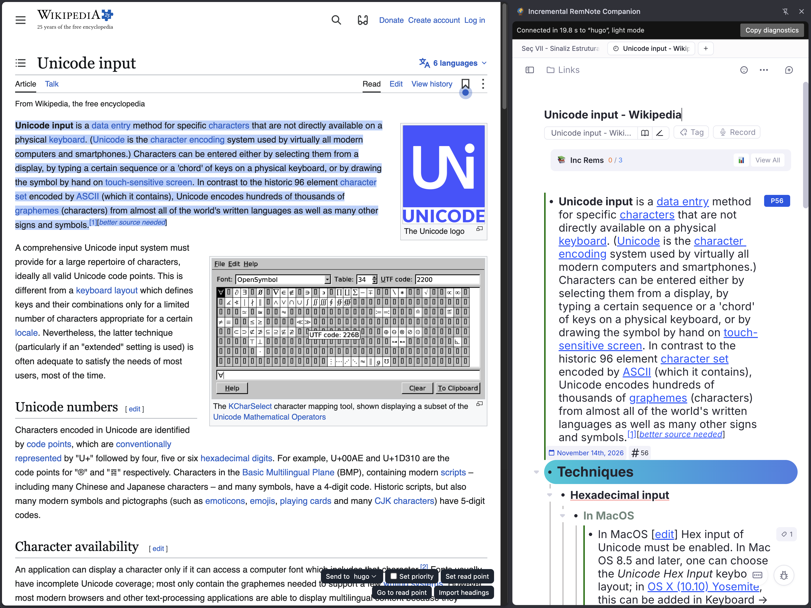
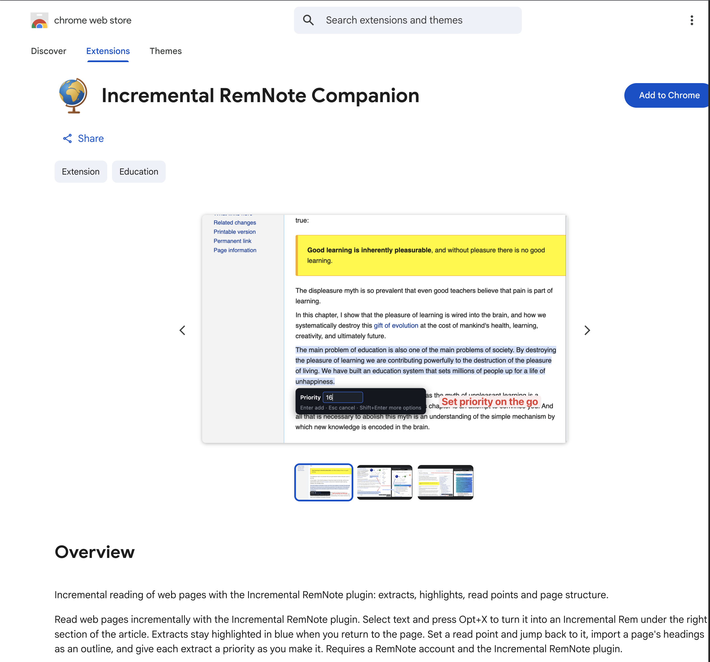
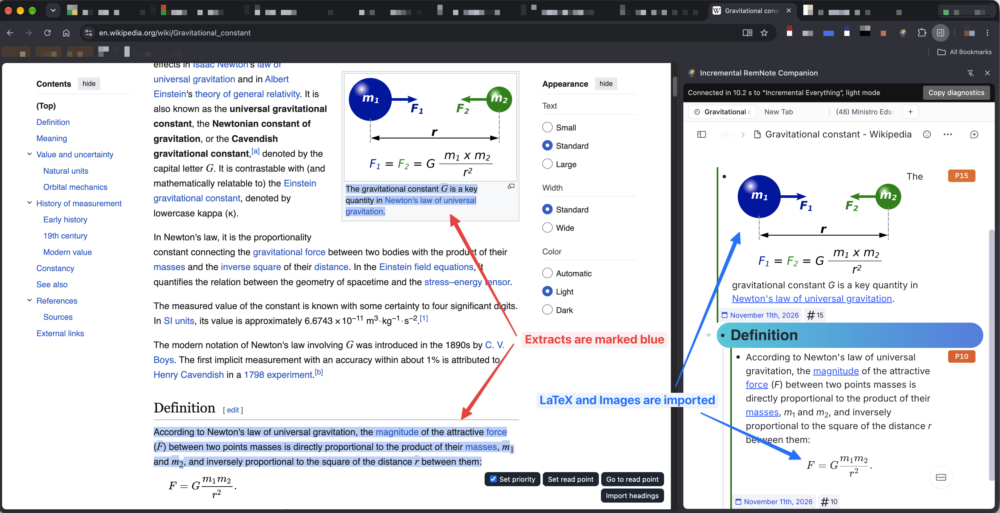
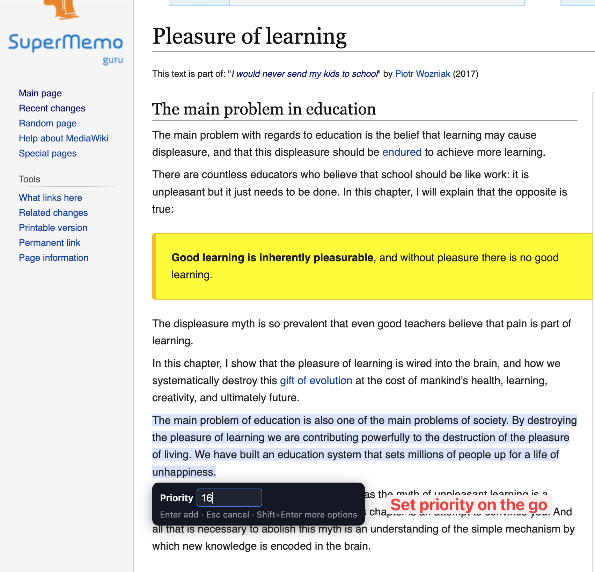
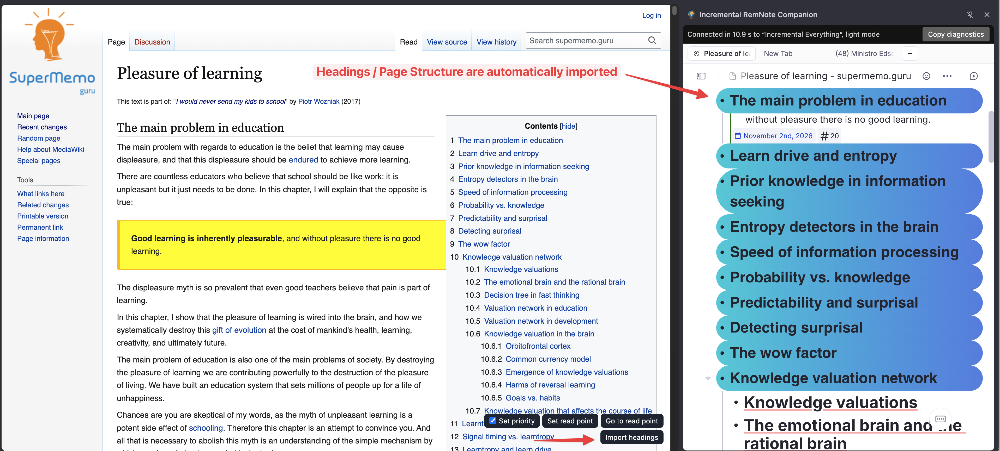

Chrome Companion Extension¶
Read web pages incrementally right in Chrome. Incremental RemNote Companion turns text you select on a page into Incremental Rems, keeps what you have extracted highlighted on the page, and remembers where you stopped reading.
It works together with the plugin, through RemNote open in Chrome's side panel.
Install it from the Chrome Web Store

What you need¶
- Chrome on a computer, or another Chromium browser. It doesn't work on phones.
- The Incremental RemNote plugin, version 1.0.186 or later, installed from the plugin marketplace. Add Highlight and the panel's Incremental status need 1.0.199 or later, and the reading clock 1.0.200.
- A RemNote account, signed in on www.remnote.com in the same browser. The panel opens whichever knowledge base this browser used last.
Setting it up¶
-
Install the extension from the Chrome Web Store: click Add to Chrome.

-
Pin it to the toolbar, and reload any pages you already had open.
- Open a web page and click the extension's globe icon. The panel opens with RemNote on that page's document, the same one the RemNote Clipper uses, and says Connected at the top once the plugin is ready.
The first connection takes a while, as RemNote and your plugins have to start. A larger knowledge base takes longer. You can keep working in the meantime, as nothing you do on the page is lost.
If you also use the RemNote Clipper, close its panel while using this one.
After the extension is updated, reload any pages that were already open. Until you do, the bar on them says so, and refuses to add anything.
The panel and your documents¶
RemNote gets a document for a page only when you ask for it: by opening the panel on that page, or by acting on it, such as adding an extract or importing headings. Browsing doesn't add anything to your knowledge base.
| What you do | What happens |
|---|---|
| Click the icon on a page | The panel opens on that tab, with that page's document |
| Switch to another tab | The panel hides. No document is created |
| Return to that tab | The panel comes back |
| Follow a link in that tab | The panel stays, and offers Show this page in RemNote. Adding an extract there also brings up that page's document |
| Click the icon on a second tab | The panel moves there, and closes on the first tab, as each one runs all of RemNote |
To close the panel, use the X at the top of it.
The page's document: Incremental or not¶
The top of the panel, beside Copy diagnostics, says whether the page's document is an Incremental Rem:
- ✓ Incremental, with its priority, when it is, followed by the reading clock.
- Dismissed when it was Incremental and you dismissed it.
- Make Incremental when it isn't, or Make Incremental again when it's dismissed. Click it, type a priority from 0 to 100 and press Enter. An empty field gives it the priority it would inherit, ↑ / ↓ change the number, and Esc cancels.
It follows changes you make in RemNote too, such as making the document Incremental there.
The reading clock¶
When the page's document is Incremental, the panel's header shows ⏱ 12:34 · Σ 2 h 05 min: the reading time you haven't recorded yet, then the total with the reviews already in the page's history.
The clock runs while you read: the tab is in front, Chrome or the panel is the window in use, and you have scrolled, typed, clicked or selected something on the page or in the panel in the last 3 minutes. A playing video counts as reading. Otherwise it pauses and dims, and pointing at it says why. Those last 3 minutes before it pauses are kept, as reading a long paragraph without touching anything is still reading.
It keeps counting with the panel closed, for pages the panel has already shown as Incremental, and for pages you open from the queue with Use Companion. The time is kept in the browser until you record it, so closing the page or Chrome loses nothing.
Recording a review¶
Click the clock, and a bar under the header asks "Record 12 min of reading, until 14:32, as a review?":
| Key | What it does |
|---|---|
| Enter | Records it. The scheduler picks the next date, counted from when you stopped reading |
| Shift+Enter | Opens the Execute Repetition popup in the panel with the minutes filled in, to choose the interval or priority yourself |
| ← / → | Moves between the bar's buttons |
| Esc | Closes the bar |
Discard throws the time away, after asking. A recorded session appears in the page's Repetition History marked 🌐, with "Read in the Chrome Companion" and the page's address under it. The clock then starts again from 0:00.
If the page was already reviewed today and isn't due yet, recording keeps the next review date and says so: see Same-day reviews.
A session you didn't record¶
If you leave a page with time on the clock and don't come back for 30 minutes, the next time you open the panel on it you're offered that session: "Unrecorded session: 18 min, last read Nov 5, 21:40." Record it records it as a review dated when you stopped reading. Keep counting leaves it on the clock, so the next sitting adds to it and one review covers both.
With the queue and the Editor Review Timer¶
One sitting gets one review, wherever you record it:
- Opened from the queue with Use Companion, then Next in RemNote: the queue's review counts the time in RemNote before you clicked, plus the reading the Companion measured after it, not the wall-clock time. That reading leaves the clock as soon as the panel sees the review. About 20 seconds later the panel says "Added 10 min of Companion reading to the queue review", and the history shows 📎 "Queue, then the Chrome Companion from 14:27: 1m 19s of reading there" under the review. Reading you do after Next stays on the clock, as a new session.
- Recorded in the Companion first, then Next in the queue: Next adds the queue's minutes to the Companion's review and moves on, without a second review. The history shows them as "+3m in the queue".
- Any other review of the page recorded in RemNote while you read it, such as End Review or the Execute Repetition popup: the clock takes out the time that review covered.
- The Editor Review Timer running on the page in the panel: the clock doesn't record, and End Review there records the review.
Before recording, the panel asks RemNote for the latest reviews. If one has just arrived, the bar says "RemNote has just recorded part of this reading" and offers only the rest. RemNote's sync carries the reviews between the RemNote app and Chrome, so recording in both within a few seconds of each other can still give two reviews.
The bar¶
A small bar stays at the bottom right of every page, with the panel open or closed:
| Control | What it does |
|---|---|
| Send to | The knowledge base this page's extracts go to, and whose highlights it shows |
| Set priority | When ticked, each extract asks for its priority. It stays as you left it, on every page |
| Set read point | Remembers the top of the window as your place on this page |
| Go to read point | Scrolls back to that place |
| Import headings | Adds the page's sections to its document |
| › / ‹ | Hides the bar's buttons on every page, or brings them back. The menu still comes up beside selected text |
Extracts¶
Select text and a small menu comes up beside it, with Add Extract and Add Highlight.
Click Add Extract, or press Opt+X (Alt+X on Windows). The selection becomes an Incremental Rem and turns blue on the page. Bold, italics, links, images and formulas in the selection come along, with formulas as real LaTeX on sites such as Wikipedia. A selection of several paragraphs stays one Rem, with a blank line between paragraphs and a new line for each list item. Images stay on their original website, so one disappears from your Rem if the site removes it. To keep a copy in RemNote, use Store Linked Images & Audio.
Extracts go in the page's document, which RemNote keeps in its Links folder until you move it. The document itself isn't made Incremental, so use the panel's Make Incremental if you want it in your queue as well.

Opt+X is left alone when no text is selected, or inside a text box, so it still types ≈ there.
Add Highlight¶
Add Highlight in the menu, or Opt+H (Alt+H on Windows), adds the selection just as Add Extract does, in the same section and with the same formatting, but the Rem isn't made Incremental, so it stays out of your queue. It never asks for a priority, and it turns yellow on the page instead of blue.
If you make a highlight's Rem Incremental later in RemNote, it turns blue on the page.
Setting a priority¶
Press Opt+Shift+X (Alt+Shift+X on Windows), or use Add Extract with Set priority ticked. A small field beside the selection asks for this extract's priority:

| Key | What it does |
|---|---|
| A number, then Enter | Adds the extract with that priority, from 0 to 100 |
| Enter on an empty field | Adds it with the inherited priority |
| ↑ / ↓ | Changes the number by one |
| Esc | Cancels, and gives your selection back |
| Shift+Enter | Adds it and opens the full priority popup in the panel, for the interval and scheduler |
The full popup needs one click in the panel before you can type, because Chrome doesn't let an extension move the keyboard there from the page.
Sections of the page¶
Import headings creates the page's headings as nested Rems in its document, in the page's order.

Extracts go under the section they came from, and stay in reading order however you add them. If you haven't imported the headings, the extract's own section is created when it's needed, so importing is optional.
Pages whose headings aren't real headings have no sections to import. Extracts from them go straight under the document.
Highlights and the read point¶
Blue extracts, yellow highlights and the orange read point come back whenever you return to a page, and they don't change the page itself. Deleting an extract's Rem in the panel removes its highlight from the page at once. Deleted anywhere else, it goes the next time the page loads with the panel connected.
They are found again by their text. If a page has changed so much that an extract's text is gone, a message says how many highlights couldn't be placed. A read point whose text has gone falls back to its old scroll position.
Knowledge bases¶
Each knowledge base keeps its own extracts, highlights and read points. A page marks only what belongs to the current one, so a highlight made in another knowledge base doesn't appear, and returns when you switch back.
Send to on the bar lists the knowledge bases the panel has connected to, and starts with the one it connected to last. Picking another changes every open page at once, and moves the panel there, or does so when you next open it. RemNote tabs you reload afterwards also open in that knowledge base.
If you change the knowledge base in a RemNote tab, the panel restarts in it by itself. It then shows no page until you click Show this page in RemNote, so that changing doesn't create a document.
An extract goes to the knowledge base that was picked when you made it. If the panel is in a different one, the extract waits, and the panel says N waiting for that knowledge base, with a button to switch to it.
With the panel closed¶
The bar keeps working. Extracts, read points and imports wait in the browser, with a count on the toolbar icon, and reach RemNote when you next open the panel. Highlights are kept in the browser too, so they still appear. Send to says which knowledge base they belong to.
Shift+Enter in the priority field opens the panel by itself, since the full popup lives there.
Limits¶
- It works on ordinary web pages, not on Chrome's PDF viewer or internal pages.
Opt+XandOpt+Shift+Xcan't be changed yet. When text is selected, they take priority over a site's own use of those keys.- Extracts made on another computer show their highlights here once the page loads with the panel connected.
- Addresses count as the same page in the same way as for the duplicate web page warning, so a
#sectionlink leads to the same highlights.
Privacy¶
The extension has no server, and nothing goes anywhere except your own browser and your RemNote account. See the privacy policy.